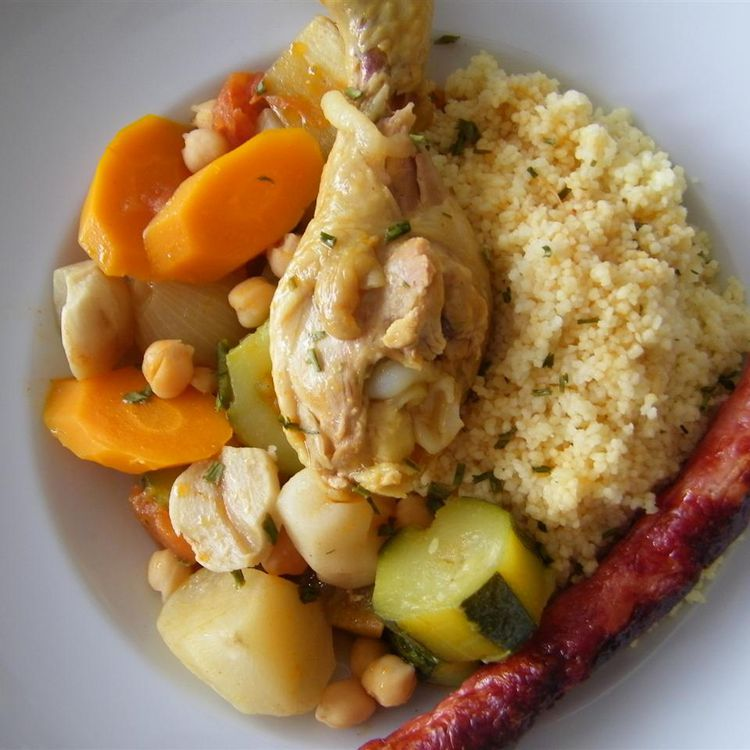

Chicken with Couscous
Home

Chicken with couscous is a simple yet flavorful dish made with tender chicken cooked in aromatic spices like cumin and paprika. It’s often paired with vegetables such as carrots or zucchini.
The couscous, light and fluffy, soaks up the savory juices from the chicken. This dish is both comforting and rooted in North African culinary traditions.
-
Ingredients
- 3 ¼ cups low-sodium chicken broth, divided
- 1 cup quick-cooking couscous
- 2 tablespoons olive oil, divided
- 4 skinless, boneless chicken breast halves - cut into cubes
- salt and ground black pepper to taste
- 1 carrot, thinly sliced
- ½ cup finely chopped jalapeno chile peppers
- 1 zucchini, diced
- 3 green onions, thinly sliced
- 1 ½ teaspoons grated fresh ginger root
- ½ teaspoons curry powder
- 1 teaspoon cornstarch
Steps
- Bring 2 cups broth to a boil in a medium saucepan. Stir in couscous and 1 1/2 teaspoons olive oil. Turn off heat, cover, and let stand for 10 minutes.
- Meanwhile, heat 1 tablespoon olive oil in a medium skillet over medium heat. Add chicken; season with salt and pepper. Cook and stir until chicken is no longer pink in the center and the juices run clear. An instant-read thermometer inserted into the center should read 165 degrees F (74 degrees C). Remove chicken from the skillet and set aside.
- Heat remaining 1 1/2 teaspoons olive oil in the same skillet over medium heat. Stir in carrot and jalapeño peppers; sauté for about 2 minutes. Mix in zucchini, green onions, 1/4 cup chicken broth, and ginger. Cook and stir until vegetables are tender, about 5 minutes.
- Stir together remaining 1 cup chicken broth, curry powder, cornstarch, and coriander in a small bowl until blended. Pour over vegetables in the skillet. Return chicken to the skillet. Continue cooking until chicken is coated and sauce is thickened, about 2 minutes. Serve over couscous.